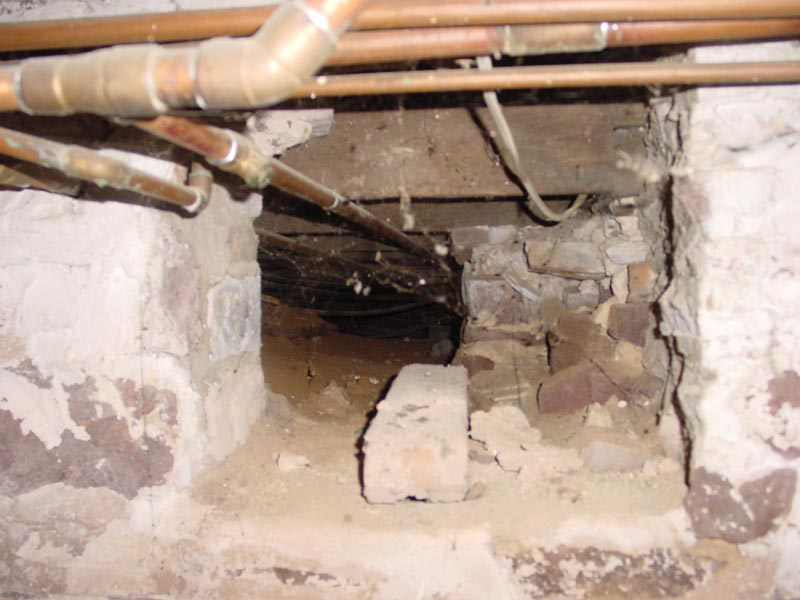

|  |
|
Though it might be considered a commentary upon the condition of other parts of the house, this is a certifiable hole in the wall. Note the unsheltered pipes that go under the kitchen. Thankfully, due to poor insulation and the resulting heat leakage, these pipes don't quite freeze in the winter. Visible due to the flash are the foundations for both chimneys that used to reside in the kitchen. They've since been closed up. Not visible in this picture are the three bodies, one of which is a defiled and restrained zombie, that are stored around the corner next to the crypt and altar to Ba'al. [ Look left to the shelves | Back to by the stairs | Look right to the workbench ] |